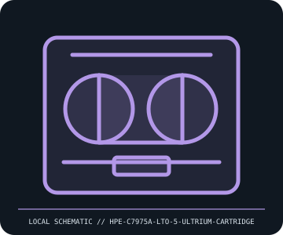

[ REMOVABLE MEDIA // MODEL-SPECIFIC RECORD ]
HPE C7975A LTO-5 Ultrium 1.5 TB Cartridge
HPE LTO Ultrium generation 5, C7975A data cartridge. This catalog entry distinguishes the removable medium from its drive/reader and calls out model-specific fit and format caveats.

IDENTIFICATION: Transcribe the entire model/part number, capacity, generation and revision from the label or packaging. Confirm the exact host-device manual before inserting or writing.
Format, capacity and compatibility
| Product / part ID | HPE C7975A LTO-5 Ultrium 1.5 TB Cartridge |
|---|---|
| Generation / format | HPE LTO Ultrium generation 5, C7975A data cartridge |
| Capacity and medium | C7975A LTO-5 rewritable data cartridge; 1.5 TB native (up to 3.0 TB at 2:1 compression). LTO-5 media supports hardware encryption in a compatible drive and supports LTFS partitioning where the drive/software stack allows. |
| Compatibility | LTO-5 drive reads/writes LTO-5 and LTO-4 cartridges, and can read LTO-3 under the LTO generation compatibility rules; newer drives have different read/write limits. Always check the precise drive compatibility matrix, firmware, barcode, and backup software. |
| Version and model caveat | C7975A identifies HPE LTO-5 rewritable media; WORM cartridges and cleaning cartridges are different. Compression is workload-specific and is not native capacity. Cartridge generation is not enough to infer encryption-key or LTFS application support. |
Handling and preservation
Store in its case at the manufacturer’s specified environment, away from dust, magnets, direct sun, and liquids. Acclimate after shipping, keep labels and barcode readable, inspect before loading, track load/error histories, and periodically test restoration and checksums.
- Preserve original packaging, label, acquisition notes and any write-protect state; photograph the media before use.
- Make at least two independent copies of valuable data, verify checksums, and periodically test a restore. A removable cartridge or card alone is not an archival strategy.
Model and version notes
C7975A identifies HPE LTO-5 rewritable media; WORM cartridges and cleaning cartridges are different. Compression is workload-specific and is not native capacity. Cartridge generation is not enough to infer encryption-key or LTFS application support.
Standards and product-family sources establish the generation; exact model manuals, labels, regional revisions, firmware, interface and host support determine actual interchangeability.
Sources and standards
- HPE — LTO-5 Ultrium 3 TB RW cartridge (C7975A)Manufacturer product listing for part number and native/compressed capacity.
- LTO Program — LTO technology generationsLTO Consortium generation, backward compatibility, encryption, and LTFS technology overview.
Manufacturer and standards references are preferred; archival manuals or museum records are identified when products are discontinued. Capacity and compatibility claims are scoped to the specific SKU and generation named above.